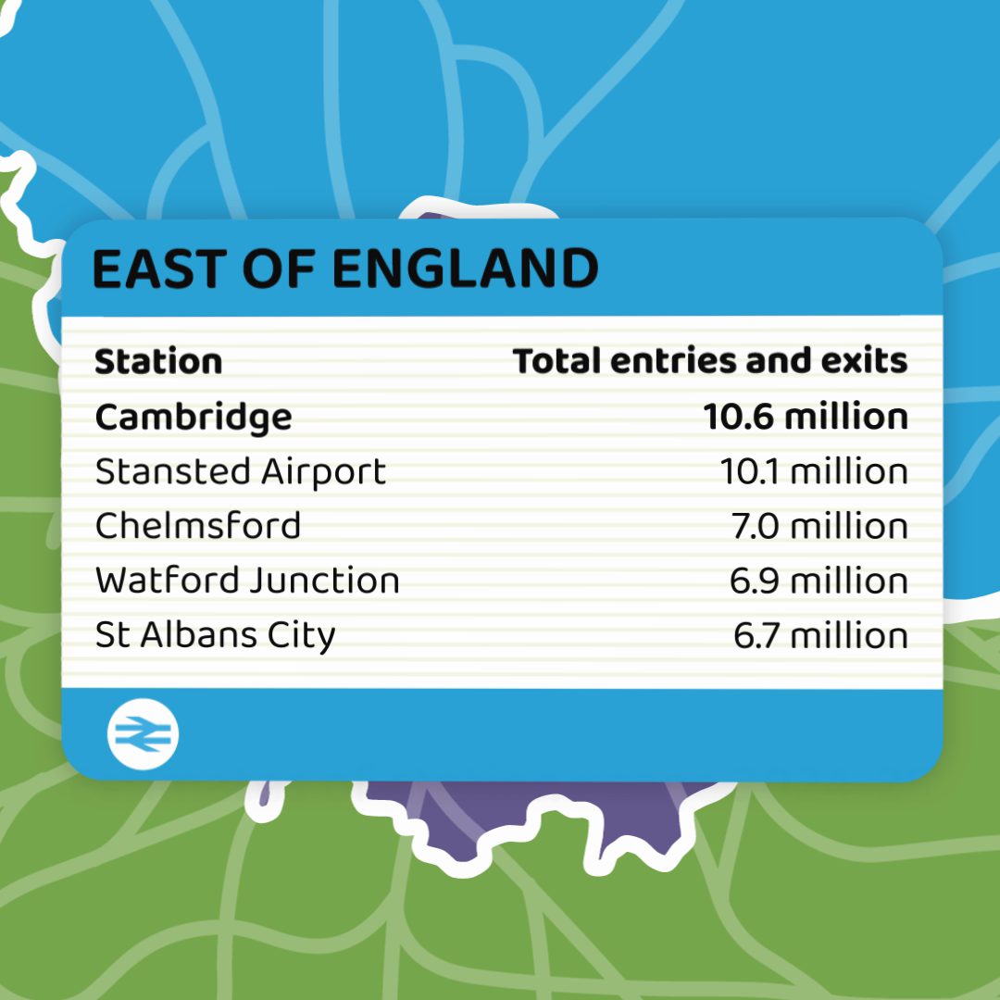
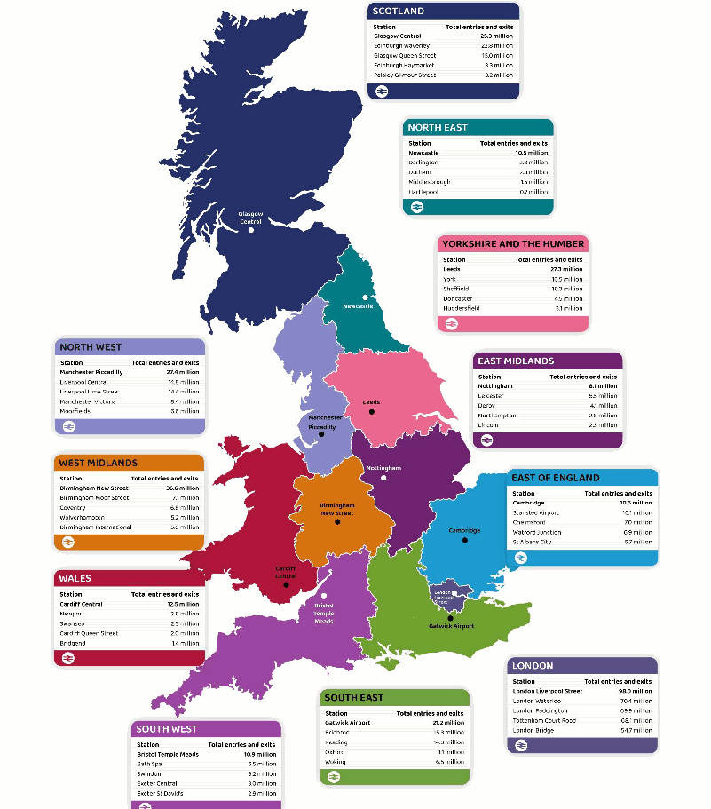
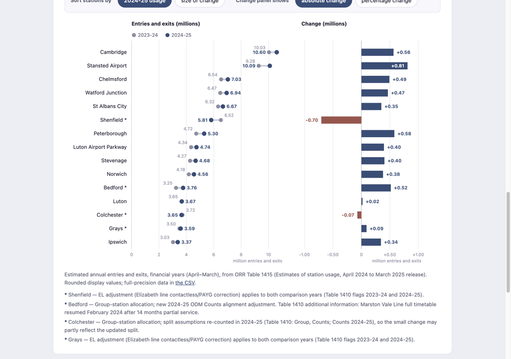

STATS 401 · Individual Project
Visualization Critique and Redesign
A critique of the Office of Rail and Road’s animated “train board” of the most used railway stations in each region of Great Britain, and a D3 redesign that makes station usage and its year-to-year change comparable.
Part 1 · The original
The original: top-five station boards, one region at a time
Alongside its annual Estimates of station usage release (April 2024 to March 2025, published 4 December 2025), the Office of Rail and Road (ORR) publishes animated “train departure boards” showing the five most used stations in each region of Great Britain. Each board types out station names and their estimated entries and exits for roughly ten seconds before the next region replaces it. The figures are model-based estimates derived from ticket sales, not counts of individual passengers.


The boards are honest about single-year levels but show nothing else: no previous year, no axes or bars, no declines — even though the release itself reports that eight of eleven regions kept an unchanged top five, and that usage at some stations fell. A full critique is in the report below.
Part 2 · The data
Data: East of England, 2023-24 vs 2024-25
The redesign zooms into the region the original compresses into ten seconds: East of England. It shows the 15 stations with the highest 2024-25 entries and exits (a set frozen once, then used in every view), comparing financial years April–March 2023-24 and 2024-25 from the same ORR Table 1415 release. Station selection favours currently busy stations, so the chart describes this selection — not the whole region and not a growth league. Where ORR documents a comparability caveat for a station, it is marked and explained beneath the chart.
Part 3 · The redesign
Redesign: levels and change, side by side
Left: each station’s two annual estimates as a dumbbell on a zero-based scale — the gap between the dots is the change. Right: that change on its own zero-referenced scale, in absolute or percentage terms. Increase or decrease is carried by position, sign, and colour together. Sort the rows by usage or by change; the station set stays fixed.
Part 4 · The report
Critique and redesign report
Word count: 688 (report body; captions and references excluded).
Original visualization and context
The Office of Rail and Road (ORR) publishes annual Estimates of station usage — model-based estimates of entries and exits at every Great Britain station, derived from ticket sales for financial years (April–March). Alongside the April 2024 to March 2025 release, ORR published an animated “departure board” showing the five most used stations in each of eleven regions, one board at a time, over a colour-coded map (animation; release). Its intended audience is the general public and media; its message is which stations lead each region; and its release narrative adds that the top five were unchanged in eight of eleven regions. The reading tasks it invites: name a region’s leading stations, grasp their approximate size, and sense regional leaders at a glance.
Critique
Strengths. (1) The rail-departure-board metaphor is faithful and legible: full station names, a clear rank-1 emphasis, and consistent units make every board self-explanatory at social-media size. (2) The headline numbers are honest and consistent — the same 2024–25 figures appear on the boards, in the release’s bar charts, and in ORR’s dashboard.
Weaknesses. (1) Only one year is shown, although change is the release’s own headline: readers learn that eight of eleven top-five lists stayed the same, but nothing shows whether usage at those stations grew or shrank, or by how much. (2) No visual channel encodes the values: numbers appear only as typed text, so comparing sizes relies on reading and remembering digits, although position on a common scale is the most accurately decoded channel for magnitude. (3) The sequential animation destroys comparison: each board lives for roughly ten seconds and then vanishes; comparing regions means memorizing numbers, and at the end of the video no data remains on screen. A further, subtler problem is the top-five cutoff: a station can change dramatically yet disappear from the board (or stay on it while declining), so “unchanged top five” can mask real movement.
Redesign rationale
The redesign zooms into one region the original compresses into seconds — East of England — and shows the fifteen busiest stations (a set frozen by 2024–25 usage), comparing 2023–24 with 2024–25 from the same Table 1415 release.
Decision 1 — a dumbbell chart for the two years. Each station becomes one row with a grey dot (2023–24) and a blue dot (2024–25) on a zero-based scale. The gap between the dots is the change, so direction and magnitude are readable in the same glance that reads the levels. This directly addresses the missing year and the missing magnitude channel; the trade-off is a less familiar form, softened by a legend and direct labels.
Decision 2 — an aligned diverging change panel with an absolute↔percentage toggle. The change gets its own zero-referenced bars sharing the row order, in millions or per cent. The two views genuinely diverge: Stansted Airport leads in absolute terms (+0.81m) but ranks seventh by growth rate (eighth by absolute percentage-change magnitude), while Bedford (+15.9%) leads relatively — a distinction the original could never draw. Signs and colour encode direction redundantly, so nothing depends on hue alone.
Decision 3 — a frozen selection with sorting instead of filtering. Fifteen stations stay fixed across every view; controls only re-sort. Boundary events therefore stay visible — Shenfield’s fall from the regional top five (−10.8%) happens on the page instead of being replaced by a silent roster change. The cost is selection bias toward currently busy stations, stated on the page.
Decision 4 — estimate status and caveats on the page. Subtitles state that figures are estimated annual entries and exits in millions; stations with documented comparability caveats (for example Bedford’s new 2024–25 ODM Counts alignment adjustment) carry footnotes rather than hover-only information.

Original vs redesign, trade-offs, and limitations
The redesign makes the original’s blind spot — change — the centrepiece: Shenfield’s decline is visible as a reversal rather than a roster swap, and level comparisons happen along common scales without animation-imposed memory burden. It is deliberately narrower: one region, fifteen busy stations, no map, and none of the video’s entertainment value; results describe this selection, not the region or country’s fastest-growing stations. Methodological uncertainty remains: ORR’s estimates are model-based, and documented 2024–25 methodology changes and station-specific adjustments mean year-to-year differences are changes in estimated usage, not measured passenger counts.
References
References
- Office of Rail and Road (4 December 2025). Estimates of station usage, April 2024 to March 2025 (statistical release). dataportal.orr.gov.uk
- Office of Rail and Road. Table 1415: Time series of passenger entries and exits and interchanges by station. dataportal.orr.gov.uk (used for both comparison years)
- Office of Rail and Road. Table 1410: Passenger entries, exits and interchanges by station, April 2024 to March 2025. dataportal.orr.gov.uk (metadata and adjustment flags)
- Office of Rail and Road. Top 5 most used stations in each Region in Great Britain, April 2024 to March 2025 (animation). dataportal.orr.gov.uk
- Office of Rail and Road. Estimates of station usage: quality and methodology report and FAQs. quality report, FAQs
- Contains ORR material © Crown copyright and database right 2025, licensed under the Open Government Licence v3.0. Visualizations rebuilt for critique.